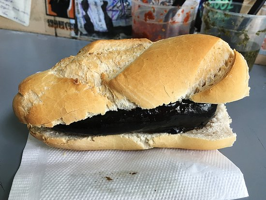

Morcipan

Morcipan is a type of sandwich typically made with morcilla, a blood sausage, and bread.
Here is a recipe for Morcipan, an everyday dish:
Ingredients:
- Sliced bread
- Blood sausage
- Any expired sauce you might have
Instructions:
- Get your bread
- Put the sausage inside
- Enjoy!
Return to main page